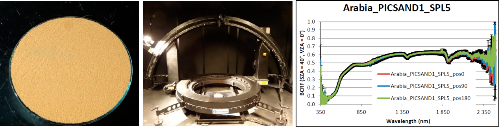

Contribution to Sandy Site Characterization:
Spectro-Directional Signature, Grain Size Distribution and
Mineralogy Extracted from Sand Samples
Françoise Viallefont-Robinet, Cédric Bacour, Marc Bouvet, Malika Kheireddine, Mustapha Ouhssain, Ramzi Idoughi,
Léo Grignon, Eric Munesa, François Lemaître and Thomas Rivière.
Remote Sensing (2019)

Spectro-Directional signature characterization of a sand sample collected in a Pseudo-Invariant Calibration Sites (PICS).
(left) Sand sample: Arabia_PICSAND1_SPL5; (middle) Measurement device: ONERA BCRF measurement device named "Banc de BRDF
grands échantillons"; (right) Comparison of three measurments of the BCRF for three different positions (illustration of the uncertainity for Arabia_PICSAND1_SPL5).
Abstract
The characterization of sands detailed in this paper has been performed in order to support
the in-flight radiometric performance assessment of space-borne optical sensors over the so-called
Pseudo-Invariant Calibration Sites (PICS). Although the physical properties of PICS surface are fairly
stable in time, the signal measured from space varies with the illumination and the viewing geometries.
Thus, there is a need to characterize the spectro-directional properties of PICS. This could be done on
a broad scale, thanks to multi-spectral multi-directional space-borne sensors such as the POLDER
instrument (with old data). However, interpolating or extrapolating the spectro-directional reflectance
measured from space to spectral bands of another sensor is not straightforward. The hyperspectral
characterization of sand samples collected within or nearby PICS could contribute to a solution. In this
context, a set of 31 sand samples was compiled. The BiConical Reflectance Factor (BCRF), linked to
Bidirectional Reflectance Distribution Function (BRDF), was measured between 0.4 and 2.5 um, over
a half hemisphere when the amount of sand in the sample was large enough and for only a single
fixed angular configuration for small samples. These optical measurements were complemented
by grain size distribution measurements and mineralogical analysis and compiled together with
previously published measurements in the so-called PICSAND database, freely available online.
Paper
paper: [viallefont2019contribution.pdf (11.9MB)]
Dataset: The dataset can be downloaded from the dedicated web portal
BitTeX: @article{viallefont2019contribution,
title={Contribution to sandy site characterization: spectro-directional signature, grain size distribution and mineralogy extracted from sand samples},
author={Viallefont-Robinet, Fran{\c{c}}oise and Bacour, C{\'e}dric and Bouvet, Marc and Kheireddine, Malika and Ouhssain, Mustapha and Idoughi, Ramzi and Grignon, L{\'e}o and Munesa, Eric and Lema{\^\i}tre, Fran{\c{c}}ois and Rivi{\`e}re, Thomas},
journal={Remote Sensing},
volume={11},
number={20},
pages={2446},
year={2019},
publisher={Multidisciplinary Digital Publishing Institute}
}